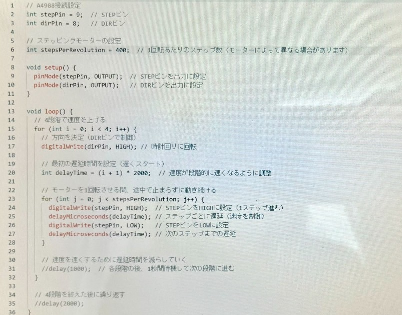

第四回
～ 様々なものを動かしてみる ～
－説明－
モーターが回るという特性を生かして観覧車にした。
光で朝（黄色）、昼（白色）、夜（青色）を表し、時間帯によって観覧車の回るスピードが変わるというものを作りたかったが、、、
光のArdinoプログラムとモーターのArdinoプログラムが上手くかみ合わなく
観覧車がただ回っているというものになってしまった(´；ω；`)
途中でいきなり爆速で回ったりと現実味のない観覧車だが、スリルがある次世代観覧車ということにさせてもらいます、、、
失敗の原因は、光とモーターを一つのパソコンで稼働させようとしてしまったところである、
初めから、それぞれのパソコンで色と速さは３段階でそれぞれを１５秒ずつで変化させるというプログラムを試行してれば
上手くいったのではないかと思う。
